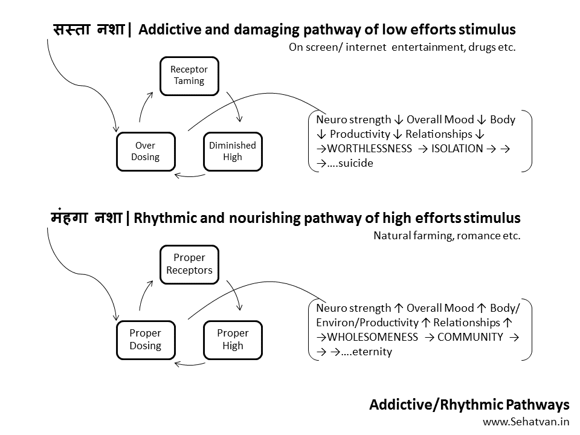
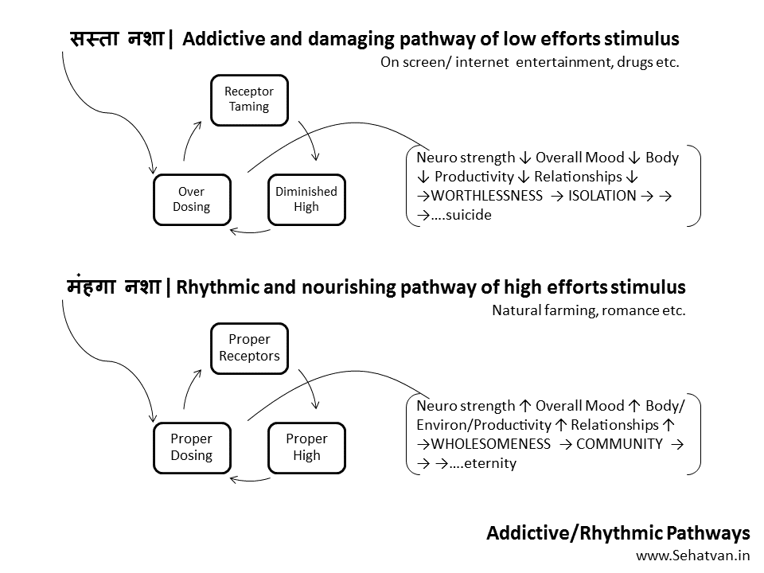
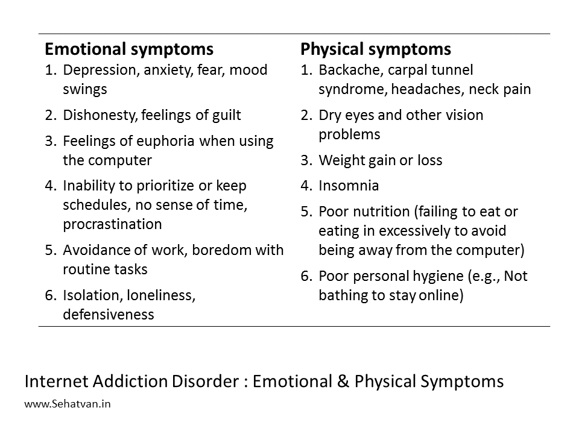
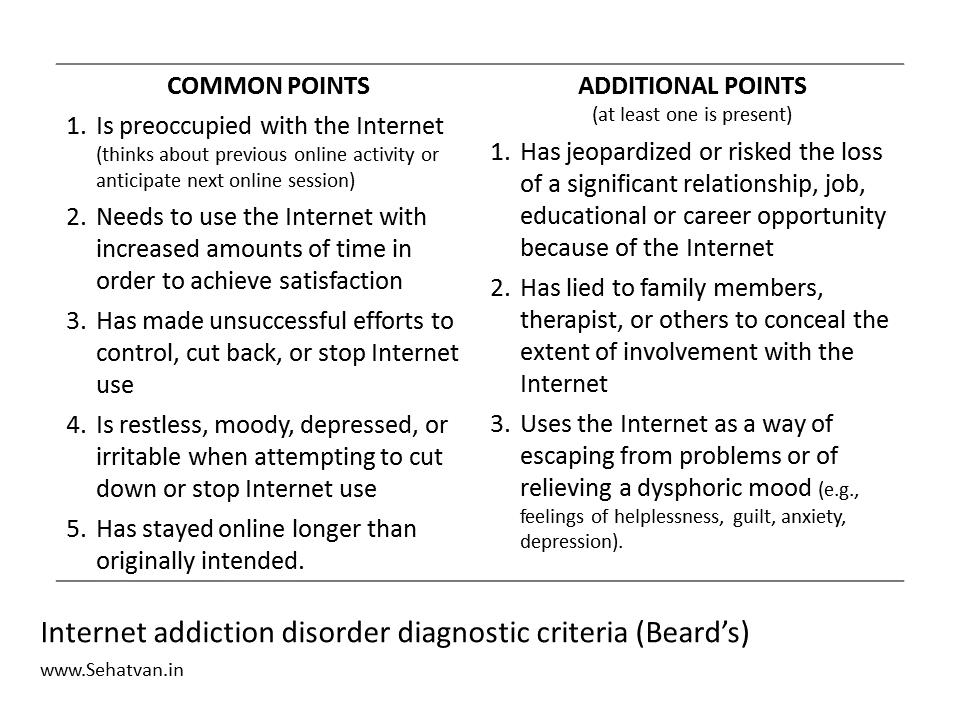
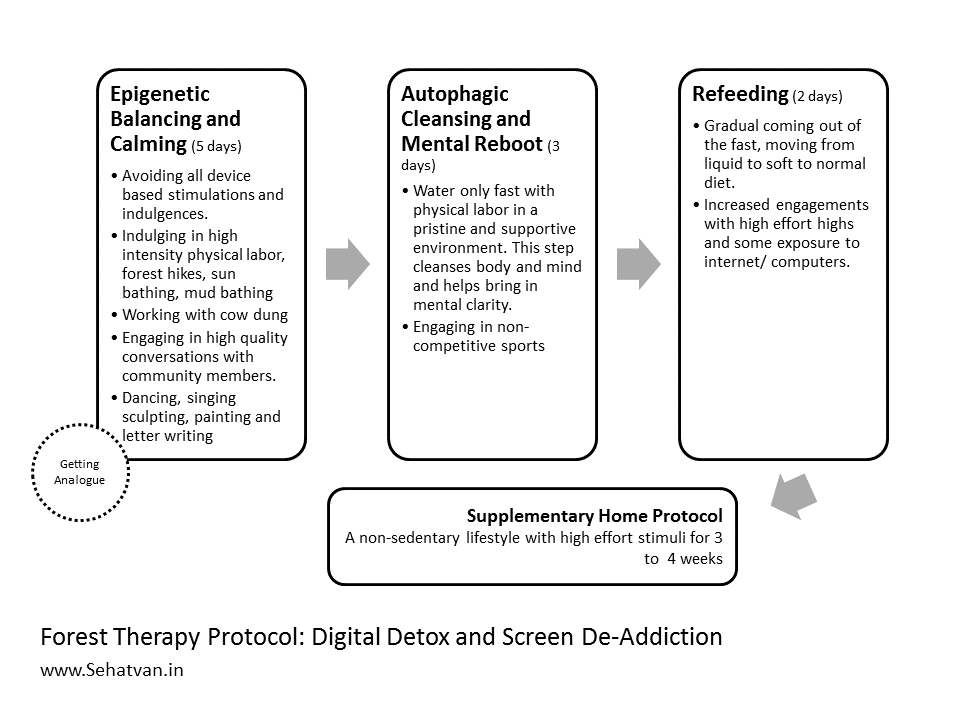

Take health, drop diseases
Namaste!
 Every living being is capable of self-recovery. Lifestyle issues weaken our health recover
capacity and our health-span.
Health-span is the period in a person's life without major illnesses.
Sehatvan Aashram is carefully designed to reboot mental and physical fitness.
Every living being is capable of self-recovery. Lifestyle issues weaken our health recover
capacity and our health-span.
Health-span is the period in a person's life without major illnesses.
Sehatvan Aashram is carefully designed to reboot mental and physical fitness.
Forest Therapy Module:
Digital Detox and Screen De-addiction
Recommended Duration:
A) At Sehatvan (Forest Protocol):
15 to 20 days
+
B) Home Protocol:
3 to 4 weeks (1 or 2 followup visits/calls)
Fee Contribution:
Indian Participants:
Rs 20,000
International Participants:
USD 350
Refund Policy:
Cancellation (only upto first 2 days of participation)
Rs. 5000/person is deducted and the balance is refunded.
Change of date:
subject to availability and updated fees.
Cancellation (only upto first 2 days of participation)
Rs. 5000/person is deducted and the balance is refunded.
Change of date:
subject to availability and updated fees.
Know More
What is this module about?
This module is about Internet Addiction Disorder or iDisorder. Internet is one of the biggest inventions of humanity. As big as the wheel or electricity, it is disrupting almost all the aspects of human life. It carries tremendous power in itself. This huge power, coupled with access, affordability and anonymity, is making it into one of the biggest addictions in human life. Conflicting reports state upto 6% to 38% public has gone addicted in various countries. Some projections suggest that 20% of Asians are affected by it. It is escalating in India, across the strata including youngsters and housewives. This addiction is leading to many neurological, psychological and social pathological conditions.
What is addiction and why internet is so addictive?
There is a fundamental design difference in plants and animals. Plants are designed to be sitting at one place their whole life. Animals are supposed to be moving most of the time, sometime very swiftly for hunting or escaping a predator. To keep animals motivated for these activities (and others linked to socializing and reproduction), Nature created certain places or pathways in their brain known as the reward centres and pleasure pathways. Where on activation, dopamine release increases along with opiates and other neurochemicals, giving a ‘high’. This ‘high’ becomes a motivational factor for doing the same thing again.
Humans have moved away from their natural habitats. They have also left hunting-gathering kind of evolutionary livelihood. In the search of ‘high’, they have been continuously inventing wage and means. These range from sports to drugs and many other stimulants that can give ‘high’ with little effort. And it is this ‘effort’ efficiency that makes the things addictive. If one achieves something without making much effort one is likely to want it more and more and overdose oneself. This overdosing reduces the sensitivity of dopamine receptors. Then the same quantity of stimuli fails to bring the same level of high. One needs to increase the dose and gets caught in the vicious trap. Side effects involved at neurological, physiological, psychological, productivity, social, environmental and other dimensions make the situation worse. Most addictions lead to deep productivity loss, health loss, depression and sometimes suicide. The internet is available with such a great convenience. It needs almost no effort and also providing anonymity. Hence, it has the right cocktail to become additive.

How to know if you are also addicted?
Humans have moved away from their natural habitats. They have also left hunting-gathering kind of evolutionary livelihood. In the search of ‘high’, they have been continuously inventing wage and means. These range from sports to drugs and many other stimulants that can give ‘high’ with little effort. And it is this ‘effort’ efficiency that makes the things addictive. If one achieves something without making much effort one is likely to want it more and more and overdose oneself. This overdosing reduces the sensitivity of dopamine receptors. Then the same quantity of stimuli fails to bring the same level of high. One needs to increase the dose and gets caught in the vicious trap. Side effects involved at neurological, physiological, psychological, productivity, social, environmental and other dimensions make the situation worse. Most addictions lead to deep productivity loss, health loss, depression and sometimes suicide. The internet is available with such a great convenience. It needs almost no effort and also providing anonymity. Hence, it has the right cocktail to become additive.

Like other addictions, most people under this do not realize their addiction. There are a host of emotional and physical symptoms that are the indicators of the addiction. Also, there are several diagnostic tests available, the popular one is Beard’s.


Therapeutic Protocol
The therapeutic protocol for iDisorder aimed at two things. First, helping the participant to improvise their physiological, neurological, psychological and societal status. This calms them down and strengthens themselves from within. Second, is to bring closer with other means of getting ‘high’ that are healthy in nature. Particularly doing strenuous physical labour, exposing to the elements and deep sharing with the peers to develop a sense of belongingness. There are 3 in-forest and 1 home component. The recommended period for forest component is 7-10 days and that of for home 3-4 weeks.
Forest Protocol
Sehatvan protocol is comprised of 3 steps:

Supplementary Home Protocol
- Epigenetic Balancing and Calming (5 days): We call this component as ‘Getting Analog’. During this phase, we try avoiding all the devices. The first and immediate need of calming is met by indulging with sunshine, mud and cow-dung. All three have powerful ‘ant-depressant’ effect. High-intensity physical activity reduces the temptation for devices on one hand and strengthens the body at the other. It helps improvise sleep quality, and thereby, bringing-in neurological smoothening. High-quality conversations with community members increase belongingness. Activities like dancing, singing, painting, letter writing are also recommended.
- Autophagic Cleansing and Mental Reboot (3 days): A short water only fast is also included in the protocol, this helps in physiological and mental detox. Some researchers say that fasting improves neural synapses bringing-in more mental clarity and stability.
- Refeeding (2 days): This period is to break the food fast as well as device fast and see if the temptation for devices is reduced or not.
Subsequent to the forest components participants are given a tailor made home protocol, which primarily aims at living a non-sedentary lifestyle with high-effort stimuli for 3 to 4 weeks.
अन्य प्रश्न
फॉरेस्ट थेरेपी क्या है?

दृग डिस्कवरी वैज्ञानिक के रूप में दो दशकों के दौरान भारत, यूरोप, अमेरिका की विभिन्न फार्मा कंपनियों के लिए नई दवाइयों को विकसित करने का काम किया। 2011 में आपको रॉयल स्वीडिश अकादेमी ऑफ साइंसेस ने नोबेल म्यूज़ियम, स्टॉकहोम में दक्षिण पूर्वी एशिया का प्रतिनिधित्व करने के लिए आमंत्रित किया। आपने 2010 एक रिसर्च पब्लिशिंग कंपनी – ‘Inventi’ और 2016 में एक सेल्फ हीलिंग स्पेस ‘सेहतवन’ का सह-संस्थापन किया।
यह तनाव-मुक्तता, विष-मुक्तता और पुनर्नवन पर आधारित एक प्रणाली है जिससे शरीर का सेल्फ-रिपेयर
सिस्टम रीबूट हो जाता है और बीमारियाँ तिरोहित होने लगती हैं।

इसे कौन कर सकता है?
इसे स्वस्थ और बीमार दोनों तरह के लोग कर सकते हैं। इससे स्वस्थ लोगों का हैल्थ-स्पान बढ़ता है
और
बीमार लोग स्वस्थ होने लगते हैं।
इसे कौन नहीं कर सकता है?
वे लोग जो जिन्हें सतत मेडिकल निगरानी की जरूरत है, जो चल-फिर नहीं सकते हैं, और वे जिन्हें
अपने
काम खुद करना पसंद नहीं है।
किन बीमारियों में लोगों ने लाभ लिया है?
डाईबीटीज़, हार्ट-इशू, बीपी, थाईराइड, ओबेसिटी(वेट लॉस), तनाव,
कैंसर (अर्ली स्टेज एवं प्रेवेंशन), PCOD, एसिडिटि, अर्थराइटिस, कमर दर्द और अन्य लाइफस्टाइल
एवं ऑटो-इम्यून
बीमारियाँ।
इसमें करते क्या हैं? कितना समय लगता है?
यह स्वास्थ्य विज्ञानी डा. विपिन गुप्ता द्वारा आविष्कारित CNA (कम्यूनिटी-लिविंग, नेचर,
ऑटोफैजी) प्रणाली
है जिसे सेहतवन में रहकर किया जाता है, यह अलग-अलग लोगों के लिए अलग-अलग हो सकती है।
हाफ-कोर्स की अवधि: 7 दिन की होती है और फुल-कोर्स में 2 से 4 सप्ताह लगते हैं।
डॉ विपिन गुप्ता के बारे में:
दृग डिस्कवरी वैज्ञानिक के रूप में दो दशकों के दौरान भारत, यूरोप, अमेरिका की विभिन्न फार्मा कंपनियों के लिए नई दवाइयों को विकसित करने का काम किया। 2011 में आपको रॉयल स्वीडिश अकादेमी ऑफ साइंसेस ने नोबेल म्यूज़ियम, स्टॉकहोम में दक्षिण पूर्वी एशिया का प्रतिनिधित्व करने के लिए आमंत्रित किया। आपने 2010 एक रिसर्च पब्लिशिंग कंपनी – ‘Inventi’ और 2016 में एक सेल्फ हीलिंग स्पेस ‘सेहतवन’ का सह-संस्थापन किया।
‘सहज सेहत’ श्रंखला इस सोच को प्रस्तुत करती है कि कैसे शरीर की ऑटो-रिपेयर क्षमताओं से लाइफ़स्टाइल बीमारियों को हमेशा के लिए खत्म किया जा सके।